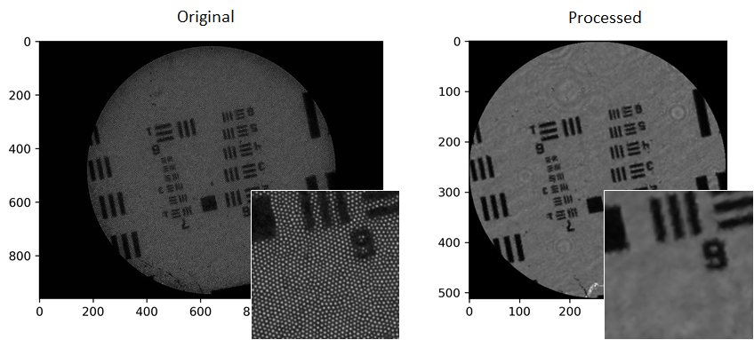
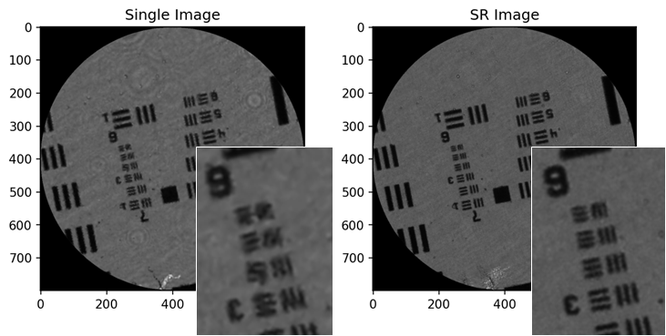

Meeting a goal for 2022 (just!), we have the first stable release of PyFibreBundle now available for download. This is a Python package for working with fibre imaging bundles, particularly for endoscopic microscopy, but it might also be useful for endoscopy and other applications (please let me know if it is).
The simplest way to set up the package is:
pip install pyfibrebundle
Or you can download everything, including examples and tests, from GitHub: https://github.com/MikeHughesKent/PyFibreBundle. Even if you're installing via pip, I recommend grabbing the examples and tests from GitHub as it's probably the easiest way to get started. The example image files used in the examples are in the test/data folder, so you should download test even if you don't want to run the tests. Detailed documentation is on Read the Docs: https://pyfibrebundle.readthedocs.io.
The package was developed as part of my lab's work on endoscopic microscopy, so the features are geared towards this application and my research interests. The core functionality is to take a raw image, crop to the bundle and remove the core pattern, as well as doing background subtraction and flat-fielding (normalisation). An example of doing that for an image of a USAF resolution target is here:

You can do some other simple bits of processing, such as spatial filtering. There are functions for locating all the cores, as well as identifying the fibre bundle as a whole. The PyBundle class simplifies using most of these lower-level functions. See the docs for all the details.
One of the things I've been working on for a while is resolution enhancement using shifted versions of the image (see this paper, for example). The SuperRes class allows you to register and combine the images using triangular linear interpolation. This is an example of combining eight images of a USAF target:

The idea behind the package was that it would be used both for offline development work as well as powering the GUIs for our various fibre bundle endomicroscopy systems. It replaces a combination of Matlab (for offline work) and LabVIEW (for GUIs) which, for various reasons, I wanted to move away from. As a result, the package has to be both versatile (implementing everything we might want to do experimentally) and fast (for real-time imaging). It just about manages this, being competitive with our previous GUI (LabVIEW + NI Vision + DLLs made in C++/OpenCV) for core removal and mosaicing, achieving >100 fps on some mediocre hardware (an Intel Core i5 laptop).
This is my first attempt to release a fully documented, pip-installable Python package, so all feedback and comments are welcome. Also, please give it a GitHub star!
Follow-up releases may include PyHoloscope (already on GitHub, pre-release) as well as our Python system for creating imaging system GUIs (Kent-CAS). Although making the latter useful for third parties will be a lot of work, so I would like to hear if there is interest.